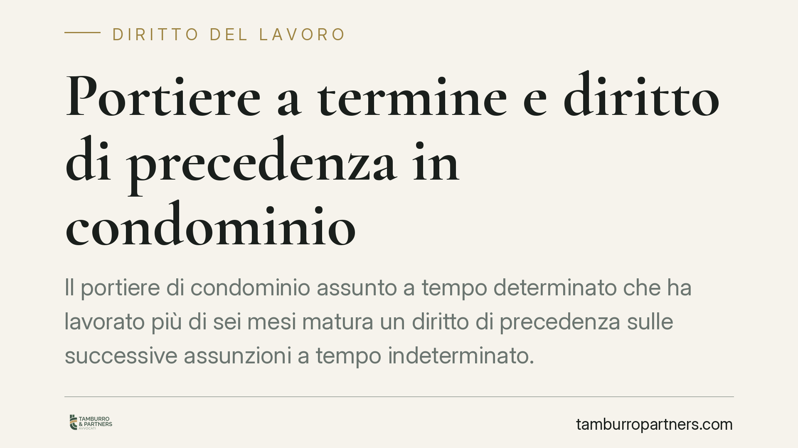

Portiere a termine e diritto di precedenza in condominio
Il portiere di condominio assunto a tempo determinato che ha lavorato più di sei mesi matura un diritto di precedenza sulle successive assunzioni a tempo indeterminato. Ignorarlo espone il condominio a responsabilità risarcitoria. Il nuovo CCNL 2025-2028 rafforza inoltre gli obblighi informativi a carico del datore di lavoro. Vediamo cosa cambia per amministratori e condòmini.

Il fatto e perché conta
Molti condomìni assumono il portiere con contratto a termine, magari per una sostituzione o per un periodo di prova prolungato. Quando poi si decide di stabilizzare la figura, o di assumere un nuovo portiere fisso, l'amministratore non sempre considera un dettaglio con conseguenze concrete: il precedente lavoratore a termine può vantare un diritto di precedenza.
È un tema che unisce diritto del lavoro e diritto condominiale. Il condominio, pur essendo un ente di gestione, è a tutti gli effetti un datore di lavoro e risponde delle stesse regole applicabili a qualsiasi impresa.
Inquadramento normativo
La disciplina è contenuta nell'art. 24 del D.lgs. 81/2015. La norma prevede che il lavoratore assunto a tempo determinato, che abbia prestato attività per un periodo superiore a sei mesi presso lo stesso datore di lavoro, ha diritto di precedenza nelle assunzioni a tempo indeterminato effettuate entro i dodici mesi successivi, con riferimento alle mansioni già svolte.
Il diritto non opera in automatico: il lavoratore deve manifestarlo per iscritto al datore entro sei mesi dalla cessazione del rapporto (tre mesi per i lavoratori stagionali). Una volta esercitato, il diritto si estingue decorso un anno dalla cessazione.
Sul piano delle conseguenze, la violazione del diritto di precedenza non rende nullo il contratto stipulato con un terzo, ma genera responsabilità contrattuale ai sensi dell'art. 1218 c.c.: il condominio è tenuto a risarcire il danno subìto dal lavoratore pretermesso.
�va infine segnalato l'art. 37 del CCNL dipendenti proprietari di fabbricati 2025-2028, che rafforza gli obblighi informativi del datore di lavoro verso il portiere a termine, includendo la comunicazione delle condizioni che regolano il rapporto e delle prospettive di stabilizzazione.
Implicazioni pratiche
Per il condominio e per l'amministratore ciò significa che non è possibile procedere liberamente a una nuova assunzione stabile senza prima verificare la posizione dell'ex portiere a termine.
Se quest'ultimo ha superato i sei mesi di servizio e ha comunicato la propria volontà di avvalersi della precedenza, il condominio che assume un altro soggetto per le stesse mansioni si espone a un'azione risarcitoria. Il danno liquidabile può comprendere le retribuzioni perse e, in alcune ricostruzioni giurisprudenziali, un ristoro per la perdita di chance occupazionale.
La responsabilità grava sul condominio quale datore di lavoro, ma l'amministratore che ometta i controlli dovuti può a sua volta rispondere verso il condominio per inadempimento del mandato.
Dal lato del portiere, il diritto va coltivato con attenzione: senza la comunicazione scritta nei termini, la precedenza si perde. Non basta la mera aspettativa.
Cosa fare in concreto
- Verificate l'anzianità. Prima di ogni nuova assunzione stabile, controllate se un ex portiere a termine ha maturato più di sei mesi di servizio nei dodici mesi precedenti.
- Conservate le comunicazioni. Tenete traccia scritta di ogni manifestazione del diritto di precedenza ricevuta dal lavoratore e della data di ricezione.
- Rispettate gli obblighi informativi. Inserite nel contratto a termine le informazioni richieste dall'art. 37 del CCNL, incluse le condizioni sulle future stabilizzazioni.
- Coinvolgete l'assemblea con dati corretti. L'amministratore deve informare i condòmini dell'eventuale diritto di precedenza prima della delibera di assunzione, per evitare decisioni viziate.
- Documentate le scelte. Se il condominio ritiene di non applicare la precedenza, motivate per iscritto le ragioni tecniche o organizzative, così da poter sostenere la posizione in caso di contenzioso.
La gestione del personale condominiale richiede il coordinamento tra regole civilistiche e giuslavoristiche. Consigliamo di valutare ogni singola posizione con l'assistenza di un professionista, soprattutto nel passaggio da rapporto a termine a rapporto stabile.
Disclaimer
Contributo informativo a cura di Tamburro & Partners - Avv. Giuseppe Tamburro. Non costituisce parere legale.
Ogni storia di lavoro ha i suoi tempi.
Se gestisci HR e vuoi un confronto su contenzioso, ispezioni o licenziamenti, scrivi allo studio. Ti rispondiamo entro un giorno lavorativo.